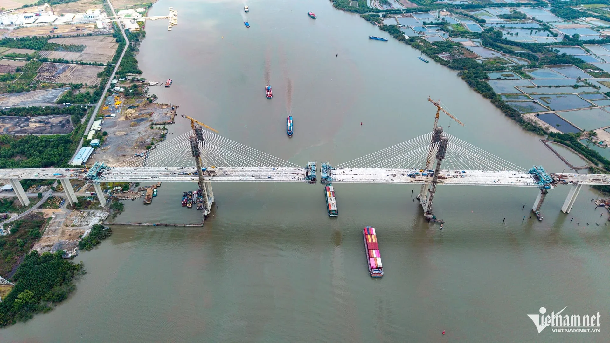

Cầu Phước Khánh là hạng mục quan trọng thuộc tuyến cao tốc Bến Lức - Long Thành, bắc qua sông Lòng Tàu và kết nối trực tiếp TP.HCM với Đồng Nai. Đây cũng là một trong những công trình cầu dây văng lớn nhất khu vực phía Nam.
Theo thông tin cập nhật mới nhất, công trình đã đạt khoảng 95% khối lượng thi công và đang bước vào giai đoạn hoàn thiện cuối cùng. Khi hoàn thành, cầu sẽ góp phần nối thông toàn tuyến cao tốc Bến Lức - Long Thành, tạo hành lang giao thông chiến lược giữa miền Tây Nam Bộ và khu vực Đông Nam Bộ.
Ý nghĩa đối với hạ tầng khu vực
Trong nhiều năm qua, việc kết nối trực tiếp giữa Long An, TP.HCM và Đồng Nai còn phụ thuộc vào nhiều tuyến đường hiện hữu thường xuyên quá tải.
Khi cao tốc Bến Lức - Long Thành được khai thác đồng bộ, thời gian vận chuyển hàng hóa và di chuyển giữa các địa phương sẽ được rút ngắn đáng kể. Điều này đặc biệt quan trọng đối với hoạt động logistics, cảng biển và khu công nghiệp.
Những khu vực hưởng lợi
Theo đánh giá của Trí Đức Realty, các khu vực có khả năng hưởng lợi lớn gồm:
- Nhơn Trạch.
- Long Thành.
- Cần Giờ.
- Nhà Bè.
- Khu vực dọc cao tốc Bến Lức - Long Thành.
Đây là những địa phương nằm gần các đầu mối giao thông chiến lược và có tiềm năng thu hút thêm dòng vốn đầu tư trong thời gian tới.
Cơ hội đầu tư dài hạn
Khác với các đợt tăng giá ngắn hạn theo thông tin quy hoạch, giá trị thực sự của cầu Phước Khánh đến từ việc hoàn thiện mạng lưới giao thông liên vùng.
Khi kết hợp với sân bay Long Thành, Vành đai 3 và Vành đai 4, cầu Phước Khánh sẽ góp phần hình thành mạng lưới hạ tầng hoàn chỉnh, tạo nền tảng cho sự phát triển của thị trường bất động sản khu vực phía Đông và phía Nam TP.HCM trong nhiều năm tới.
Nguồn: Trí Đức Realty